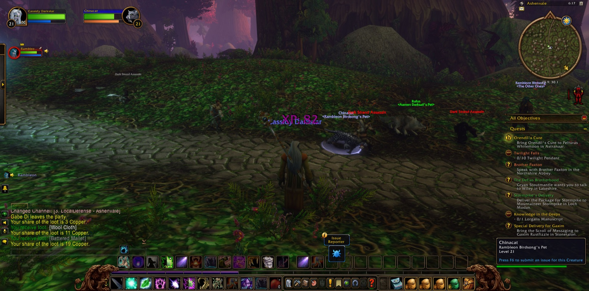
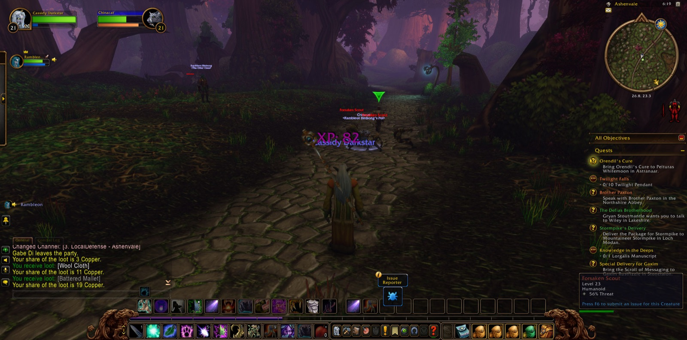

Cassidy Darkstar set out from The Zoram Strand, on the western marches of Ashenvale, and went down at once into Blackfathom Deeps, and a picture was taken at the threshold. There the druid Errook joined him and soon went his own way. Bluntz the paladin walked beside him for a short stretch of that dark road, and there too Cassidy first met Rambleon the hunter, who was to prove the steadiest companion of all his wanderings. But the Deeps did not hold him, and he came out again by way of Twilight Vale in Darkshore.


His errands lay instead at Bathran's Haunt, where Forsaken Seekers and Thugs and Herbalists kept the ground. It was hard won. Cassidy fell there once, as travellers on such roads will, yet he did not turn aside. He gathered four Minor Mana Potions for the errand called "Ineptitude + Chemicals = Fun," and five strands of Bathran's Hair from that grim place, taking many pictures among the ruins of Ordil'Aran and the Haunt as he went. Gabe, a druid of his own order, stood with him a little while. At Maestra's Post he gave up the hair and took up Orendil's Cure, and bore it to Pelturas Whitemoon in Astranaar. There he was given the errand of Elune's Tear, and at Maestra's Post that of Supplies to Auberdine. Dark Strand Assassins and Forsaken Scouts barred the woods between, and Night the priest kept company with him for a few paces.


Then with Rambleon he went north through Darkshore, past Auberdine and over Cliffspring River, to the Ruins of Mathystra and the Tower of Althalaxx. There Sneaky the rogue joined him, and after him Ursamajor the druid, and together they made war upon the Stormscale. Twelve Myrmidons fell, and eight Sorceresses, and six Warriors, and so "Swelling Forces" was fulfilled; and six Mathystra Relics were recovered from the stones. Elowyn the hunter crossed his path and passed on. At Ameth'Aran, with Rambleon again, and Telas and Ryaj beside him for a moment, he slew Anaya Dawnrunner; and at the Grove of the Ancients he laid down both his labours and received a new one, The Sleeper Has Awakened.


Southward again he went, to Astranaar and beyond. At Iris Lake he found Elune's Tear amid Shadethicket Moss Eaters and an Ashenvale Bear, and in The Ruins of Stardust he gathered five handfuls of stardust. When he returned with them to Astranaar he came into new strength, and was now of the twenty-second level, and a picture marked it. He took up the errand of Fallen Sky Lake, and then went into Thistlefur Village, where Thistlefur Avengers and Shamans fell before him and Dal Bloodclaw himself was slain. Cassidy carried the skull back to Astranaar, and "Culling the Threat" was ended.


Last of all he went north once more through Darkshore to Auberdine, and over The Veiled Sea to Rut'theran Village, and so up into Darnassus, where a picture was taken at the gate. He walked the Cenarion Enclave and the Craftsmen's Terrace, the Warrior's Terrace and the Tradesmen's Terrace, and there for a while he rested among his own people, with the road still lying open before him.